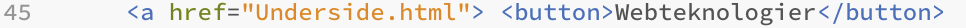

Webteknologier
Her er et eksempel på hvordan jeg lavede kanppen du trykkede på for at komme herind

Jeg startede med at lave min underside som indeholder info om webteknologiforløbet. Derefter lavede jeg en ny linje i mit html dokument, hvor jeg startede med a med krokodillemund foran, for at lave et link. Så skrev jeg href= og indsatte linket til min lokale fil som jo så var undersiden til webteknologier. Til sidst skrev jeg button for at lave en knap, og navngav den.